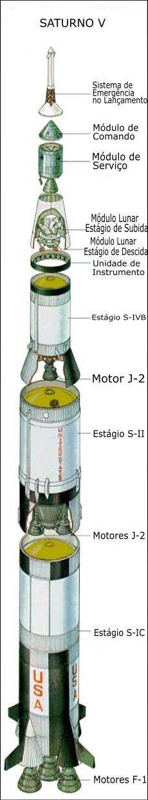

Construído pela NASA no programa espacial que durou dos anos 1960 até os anos 70, o Saturno V foi o foguete mais potente construído até hoje (2021).
Com uma dimensão de 110 metros de altura, 10 metros de diâmetro e pesando aproximadamente 2.8 mil toneladas, o Saturno V tinha capacidade de gerar um força de 35.5 milhões de newtons na hora do lançamento e podia lançar cerca de 140 toneladas na órbita da terra.
Ele foi responsável pela chegada do homem na lua no ano de 1969 e para que isso fosse possível o foguete contava com três estágios de propulsão, o módulo lunar, o módulo de serviço, o módulo de comando e o sistema de emergência em caso de alguma falha.
Em caso de problemas o Sistema de Emergência acoplado junto ao Módulo de Comando levava os astronautas para longe do resto do foguete.
Era conhecido como Columbia e era local onde os astronautas ficavam e controlavam todo o foguete. É a única parte que volatva para a Terra
Ali tinha ferramentas essenciais para a vida dos astronautas, como água, mantimentos, oxigênio e ferramentas extras..
Conhecido como Eagle (Águia em inglês), utilizado para o pouso na Lua, tinha o Estágio de Descida que servia para o pouso na Lua e o Estágio de Subida onde ele se desacoplou do Estágio de Descida e entrava na órbita da Lua se reconectando com o Módulo de Serviço e o de Comando.
Continham os motores e combustível necessários para tirar o foguete da Terra. Assim que o combustível terminava o Estágio se desprendia. Os Estágios S-IVB e S-II utilizavam oxigênio líquido e hidrogênio líquido como combustível já, o Estágio S-IC utilizava oxigênio líquido e RP-1 (querosene refinado).
O foguete tinha um computador que controlava os sistemas principais e que eram funções simples como orientação, e desacoplamentos, já que ele não tinha mais poder computacional do que uma calculadora de hoje em dia. A maior parte dos controles era manual.